자율군집 사물지능
자율군집 사물지능이란
- 정의: 사물들이 스스로 군집을 이루어 집단지능을 발현합니다. 거주환경의 사물 (단말) 들이 중앙 서버 없이 스스로 주변을 인지하고 협업하며, 사용자에게 자율적으로 서비스를 제공하는 기술입니다.
- 동작: 스스로 감지하고, 군집을 이루어, 상황과 맥락을 파악합니다.
- 사용자가 기기를 조작하지 않아도, 행동이나 환경 변화를 감지한 단말이 스스로 필요한 이웃 단말을 찾아 군집을 형성합니다.
- 군집을 형성한 단말들이 서로 다른 부분적 정보들을 시간적, 공간적으로 결합해, 혼자서는 알 수 없는 상황과 맥락까지 파악합니다.
- 지향: 사람이 사물을 배우고 조작하는 세상이 아니라, 사물이 사람을 알아보고 먼저 움직여 도와주는 세상입니다.
일반 사물지능과의 차이
| 구분 | 일반 사물지능 | 자율군집 사물지능 |
|---|---|---|
| 지능이 있는 곳 | "외부 서버 - 공중 통신망 - 다수 단말" 구조. 단말은 데이터를 올리고 명령을 받을 뿐, 판단은 서버가 합니다. | 판단이 단말 안 (온디바이스) 과 단말 사이 (군집) 에서 일어납니다. |
| 사람과의 관계 | 사용법을 배우고 설정하고 명시적으로 지시해야 반응합니다. | 사람의 일상 행동 자체가 입력이 되어 사물이 스스로 먼저 움직입니다. 설정도 사용법 숙지도 필요 없습니다. |
| 인프라 | 데이터센터, 전력망, 통신망에 의존합니다. 끊기면 무력화되고, 외부 서버와의 통신 지연 때문에 실시간 반응이 어렵습니다. | 집 안에서 단말끼리 직접 통신합니다. 인프라가 끊겨도 동작하고, 실시간 반응이 가능합니다. |
| 개인정보 | 민감한 개인정보가 집 밖의 서버로 전송됩니다. | 민감한 개인정보는 집 안에서만 사용 후 소멸하고, 밖으로는 추상화된 정보만 전송됩니다. |

- 일반 사물지능 예시: 조명, 에어컨, 보일러, 도어락은 각각 앱에서 켜고 끄거나 예약하고, 스마트 스피커에는 말로 하나씩 명령하며, 연기 감지기는 앱 알림으로 확인합니다. 모든 판단은 서버에서 하고, 인프라가 끊기면 멈추며, 민감한 개인정보가 밖으로 나갑니다.
- 자율군집 사물지능 예시: 서버도 앱도 없이 사물끼리 알아서 움직입니다. 보일러는 따뜻한 물을 준비하고, 연기 감지기는 가스를 잠그고, 조명은 가는 길을 밝히고, 도어락은 외출할 때 문을 잠그고, 약 드실 시간을 알려 줍니다. 민감한 정보는 집 안에서 사용 후 소멸하고 밖으로는 추상화된 정보만 전송됩니다.

왜 자율군집 사물지능인가
- 돌봄 현장에는 스마트워치, AI 스피커, 스마트 플러그, 문열림 센서, 블루투스 혈압계와 혈당계, 전력 및 수도 사용량 모니터링 서비스 등이 도입되고 있으나, 기기별 사용법, 관리 방식, 데이터 확인 절차가 서로 달라 복지 담당자와 사용자에게 학습 부담과 운영 부담을 줍니다. 모든 기기를 사용자가 설정하고 사용법을 배워야 한다면 노약자는 쓸 수 없습니다.
- 노인과 취약계층의 건강위험은 하나의 행동이나 생체신호로 설명되지 않고, 식사, 수면, 외출, 복약, 위생, 이동, 사회적 접촉 등 반복되는 일상생활 변화 속에서 복합적으로 드러납니다. 단일 센서, 단일 이벤트 중심의 탐지로는 조기 예측이 어렵습니다.
- 가정에 카메라나 상시 녹음 장비를 두면 집이 감시공간으로 인식됩니다. 원시 음향, 영상, 민감정보의 외부 전송을 최소화하고 가정 내 단말에서 먼저 처리하는 On-device 구조가 필요합니다.
- 클라우드 중심 AI 는 네트워크 장애, 서비스 중단, 외부 서버 의존 때문에 돌봄에 필요한 지속성과 안정성을 보장하기 어렵습니다. 핵심 돌봄 기능은 엣지 단말과 홈 게이트웨이에서 안정적으로 동작하고, 필요할 때만 외부의 대규모 생성형 AI 를 에이전트 형태로 쓰는 구조가 필요합니다.
SAAL 플랫폼으로 구현
- SAAL (Swarm-intelligent Ambient Assisted Living) 플랫폼은 자율군집 사물지능을 초기 치매와 경도인지장애 돌봄에 맞춰 구현한 On-device AI 기반 플랫폼입니다. 하나의 기기가 모든 정보를 모으는 대신, 착용형, 이동형, 고정형 단말이 생활공간 안에서 자율적으로 연결되어 위치, 행동, 생체신호, 생활 패턴을 함께 해석합니다.
- DEAN node (ADL 감지기, Digital Ear And Nose, DE&N 노드): 단위공간 (침실, 부엌, 화장실, 거실 등) 천장에 붙이는 고정형 엣지 단말로, 초저전력 On-device AI 로 ADL 을 인지해 SlimHub 에 알립니다.
- PAAR band: 착용형 단말 (생체정보 측정형 스마트밴드) 로, 심박수, 심박변이도, 산소포화도, 수면, 활동량, 보행 특성을 반복 측정해 개인별 기준선을 만들고, 자세변화, 낙상, 외출, 보행, 재활 수행도를 해석합니다.
- SlimHub: DEAN node, PAAR band 와 별도 설정 없이 스스로 통신해 데이터를 모으고 필요할 때 클라우드 서버로 보내는 게이트웨이입니다. 단위공간의 DE&N 노드들을 모아 원격 DB 서버와 모니터링 앱에 연결합니다. 스피커와 마이크, 외부 생성형 AI 를 잇는 에이전트를 내장해 거주자와 대화하고, 보호자나 의사의 처방 내용을 음성으로 들려줍니다. 가정 안에서 이상상황 알림과 초기 재활 지원 (예: 오븐 과열, 화장실 사용 후 물내림 확인) 을 합니다.
- 스마트폰 앱: 거주자가 SlimHub 에 저장된 행동내역과 ADL 정보를 실시간으로 보고, 보호자, 담당 치료사와 정보를 연동해 생활보조, 재활 권고, 상담을 받는 사용자 접점입니다.
- 이 플랫폼은 단말 (DE&N 노드, PAAR band), 게이트웨이 (SlimHub), 원격 데이터베이스 서버, 사용자 (환자, 보호자, 의료진) 앱으로 이루어진 군집지능형 거주환경 지원 플랫폼입니다. 2024-03 ~ 2027-02 에는 SAAL 플랫폼 3.0 을 개발합니다.
- 무설정, 무인지 자율군집: 모든 SAAL 단말에 자율군집 미들웨어를 내장해, 단말들이 사용자의 설정 없이 스스로 군집을 이룹니다.
- 출발점: 초기 자율군집 연구는 실내 공간의 이동형, 고정형 단말들이 중앙 서버 없이 서비스를 탐색, 연결, 재구성하는 구조 (동적 서비스 탐색, 분산형 모니터링, 에이전트 협업 공간 재구성) 에서 시작했고, 이것이 SAAL 플랫폼의 기반이 되었습니다.
- SAAL 플랫폼은 이공분야 대학중점연구소 사업으로 개발되었고, 기술 수준은 기술개발 완성단계 (TRL 7 ~ 8) 입니다.


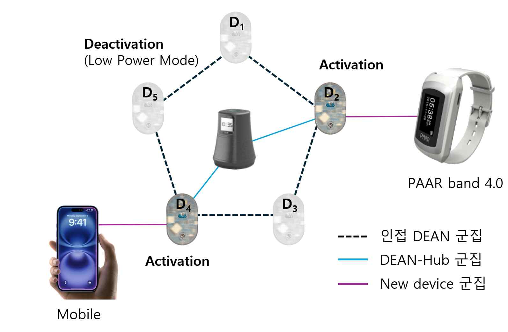
자율군집 관련 주요 연구 논문
- 자율 탐색, 비동기 메시징, 자가복구 네트워킹 (Self-Organizing Discovery, Messaging and Failover)
- [1] S. Y. Jeong, H. G. Jo, S. J. Kang, A dynamic service lookup and discovery scheme using a self-organizing overlay network for indoor location-based service, Proc. REACTION, 2012
- [2] S. Y. Jeong, H. G. Jo, S. J. Kang, Self-organizing distributed architecture supporting dynamic space expanding and reducing in indoor LBS environment, Sensors, vol. 15, no. 6, 2015
- [3] H. G. Jo, T. Y. Son, S. Y. Jeong, S. J. Kang, Proximity-based asynchronous messaging platform for location-based Internet of Things service, ISPRS Int. J. Geo-Inf., vol. 5, no. 7, 2016 (ePost-It)
- [4] H. H. Kim, H. G. Jo, S. J. Kang, Self-organizing peer-to-peer middleware for healthcare monitoring in real-time, Sensors, vol. 17, no. 11, 2017
- [5] S. H. Park, Y. J. Park, Y. J. Jeon, S. J. Kang, Self-organized low-power multihop failover protocol for a cellular-based public safety device network, IEEE Internet Things J., vol. 9, no. 19, 2022
- 이종 단말 간 군집 협업과 군집 주행 제어 (Heterogeneous Device Collaboration and Swarm Driving)
- [6] M. S. Kim, J. G. Lee, S. J. Kang, A self-organizing interaction and synchronization method between a wearable device and mobile robot, Sensors, vol. 16, no. 6, 2016
- [7] M. S. Kim, S. H. Kim, S. J. Kang, Middleware design for swarm-driving robots accompanying humans, Sensors, vol. 17, no. 2, 2017
- [8] D. H. Wi, H. J. Kwon, J. K. Park, S. J. Kang, J. D. Lee, Opportunistic and location-based collaboration architecture among mobile assets and fixed manufacturing processes, Sensors, vol. 18, no. 8, 2018
- [9] S. S. Keum, C. H. Lee, S. J. Kang, Device to device collaboration architecture for real-time identification of user and abnormal activities in home, Proc. ITNAC, 2019
- 비침습 생활행동 인지와 엣지 센서 융합 (Non-Invasive ADL Recognition and Edge Sensor Fusion)
- [10] S. S. Keum, Y. J. Park, S. J. Kang, Edge computing-based self-organized device network for awareness activities of daily living in the home, Appl. Sci., vol. 10, no. 7, 2020
- [11] H. Kang, C. Lee, S. J. Kang, A smart device for non-invasive ADL estimation through multi-environmental sensor fusion, Sci. Rep., vol. 13, no. 1, 2023
- [12] C. Lee, H. Kang, S. J. Kang, Location-aware ambient sound model adaptation for on-device human activity recognition in living spaces, IEEE Access, vol. 13, 2025
- [13] C. Lee, H. Kang, S. J. Kang, DEAN (Digital Ear and Nose) node: Non-intrusive resident ADL recognition at home, Proc. SmartNets, 2025
- 생활 지원 서비스와 폐루프 중재 (Assistive Services and Closed-Loop Intervention)
- [14] I. Y. Jung, G. J. Jang, S. J. Kang, Secure eHealth-care service on self-organizing software platform, Math. Problems Eng., vol. 2014, 2014
- [15] Y. J. Park, K. E. Seong, S. Y. Jeong, S. J. Kang, Self-organizing wearable device platform for assisting and reminding humans in real time, Mobile Inf. Syst., vol. 2016, 2016
- [16] Y. J. Park, S. Y. Jung, T. Y. Son, S. J. Kang, Self-organizing IoT device-based smart diagnosing assistance system for activities of daily living, Sensors, vol. 21, no. 3, 2021
- [17] Y. J. Jeon, S. H. Park, S. J. Kang, Self-x based closed loop wearable IoT for real-time detection and resolution of sleep apnea, Internet of Things, vol. 22, 2023
연구 내용
5대 핵심 원천기술
- 센터가 오랫동안 개발해 온 기술 가운데 다음 다섯 가지가 핵심 원천기술이자 미래 원천기술 후보입니다.

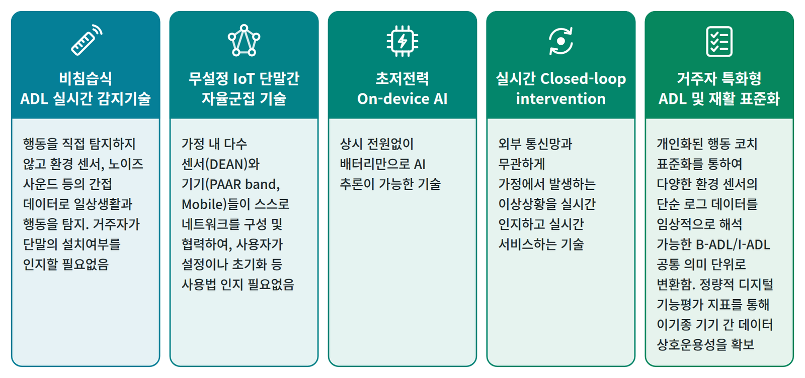
| 기술 | 내용 |
|---|---|
| 비침습식 ADL 실시간 감지기술 | 행동을 직접 탐지하지 않고 환경 센서, 노이즈 사운드 등 간접 데이터로 일상생활과 행동을 탐지합니다. 거주자가 단말의 설치 여부를 인지할 필요가 없습니다. 개인의 존엄과 사생활, 집에 대한 통제감을 해치지 않고 사물이 감시하는 것이 아니라 돕는다는 느낌을 주는 것을 목표로, 단위공간 중심의 ADL 감지기술을 DEAN node 에 내장했습니다. |
| 무설정 IoT 단말간 자율군집 기술 | 가정 내 다수 센서 (DEAN) 와 기기 (PAAR band, 스마트폰) 가 스스로 네트워크를 구성하고 협력합니다. 사용자가 설정이나 초기화 같은 사용법을 알 필요가 없습니다. 단말 사이에 self-X 개념의 통신 및 설정 프로토콜을 두어, 단말들이 스스로 이웃 단말을 식별하고 설정하며, 이웃 단말이 정상 동작하는지 실시간으로 확인합니다. 이 기능을 자율군집 미들웨어로 만들어 모든 SAAL 단말 (DEAN node, PAAR band, SlimHub, SAAL 앱 스마트폰) 에 내장했습니다. |
| 초저전력 On-device AI | 상시 전원 없이 배터리만으로 AI 추론을 하는 기술입니다. 기존 Tickless-idle 기법에 새 BDRPM heap (Bi-Directional RAM Power Management heap) 기법을 결합해 Ubinos 에, 그리고 수정한 TensorFlow Lite for Microcontrollers (TFLM) 추론 엔진에 이식했습니다. BDRPM heap 은 실행 중 RAM 사용을 실시간으로 추적해 미할당 영역의 전원은 끄고, 상시 보존 영역의 전원은 유지하며, 추론용 대용량 버퍼처럼 특정 시점에만 필요한 영역에는 쓰는 순간에만 전원을 줍니다. |
| 실시간 Closed-loop intervention | SlimHub 에 내장된 기술입니다. 다수의 DEAN node 와 PAAR band 로 거주자의 외출 여부와 현재 단위공간을 실시간으로 파악해, 외부 통신 상태와 관계없이 그 공간에 맞는 서비스 (예: 소파에 오래 앉아 있으면 운동이나 외출 권고, 가스불을 켜고 안방에서 잠들면 가스불 경보) 를 제공합니다. 장기간 모은 ADL 과 생체 신호를 스스로 학습해 가까운 미래의 상태와 행동을 예측하고, 필요하면 외부 LLM 과 연동한 대화로 인지능력이나 우울 증상을 살핍니다. 개인정보를 옮기지 않는 위치기반형 분산 Private Cloud 와 Global Cloud 로 행동신호, 생체신호 빅데이터베이스를 구성합니다. |
| 거주자 특화형 ADL 및 재활 표준화 | DEAN node, PAAR band, SlimHub, 모바일 앱에서 모은 단순 로그 데이터를 임상적으로 해석 가능한 B-ADL / I-ADL 공통 의미 단위와 디지털 바이오마커 인덱스로 표준화합니다. 정량적 디지털 기능평가 지표로 이기종 기기 간 데이터 상호운용성을 확보합니다. 2025 년 (사)스마트헬스표준포럼과 ADL 기반 노인생활능력 평가 표준안 개발 용역을 수행했습니다. |
| 구성 | 평균 전류 | 유휴 수명 |
|---|---|---|
| Tickless-idle | 3.774 uA | 6.655 년 |
| Tickless-idle + BDRPM heap | 2.268 uA (약 40 % 감소) | 11.073 년 (약 66 % 증가) |

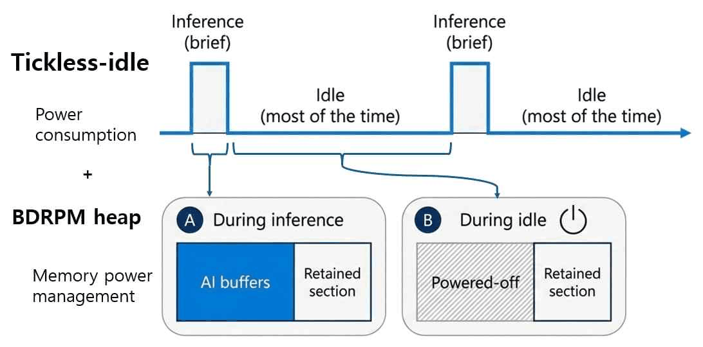
자체 개발 SAAL 단말
- 거주환경에서 노약자와 병약자의 행동 내역을 실시간으로 모니터링하기 위해 센터가 개발해 실용화 또는 상용화를 진행 중인 단말들입니다.
- 생체정보 측정형 스마트밴드 PAAR band
- 수면 품질 진단 기기 Sleepcare Kit: PAAR Tag 와 베개 (머리 위치 인지, 압력 감지, 에어패드 제어로 기도 확보와 머리 위치 변경), 홈케어 키트 PAAR band 와 Bio-Cradle (PPG, 가속도, 호흡 측정, SpO2 와 호흡으로 무호흡 감지, 가속도로 수면 중 자세 감지)
- IoT 장비 연동 기기 PNIP Box
- 위치 인식 기반 모바일 태그 PAAR Tag
- ADL-SAAL 기능 내장형 스마트 복약기 V2
- ADL-SAAL 수도, 가스 사용 감지 태그
- ADL-SAAL 환경 센서 내장형 통신 허브 스마트홈플러그
- 사용자 실시간 인지를 위한 족압패드
- SAAL 플랫폼 스마트팜 개발 키트 프로토타입
- 전류 감지 태그 (current sensing tag, DEAN 노드의 Device 이벤트용)
- 분야별 대표 시제품
- 헬스케어: SleepCare Kit (비침습형 수면 모니터링, 수면 품질 분석), Smart Pill Dispenser (스마트 복약기, 복약 알림과 이행 모니터링)
- ADL: PNIP box (IoT 연동 기기), PAAR tag (위치인식 기반 모바일 태그), 수도, 가스 태그 (수도와 가스 사용량 감지 기기)
- ADL 및 돌봄: PAAR band, SAAL Kit (SAAL 디바이스 세트), DE&N 노드 (비침습형 ADL 인지 단말, 환경, 소음, 출입, 체류 감지), SlimHub (가정용 홈서버, 엣지 AI 군집 오케스트레이션)

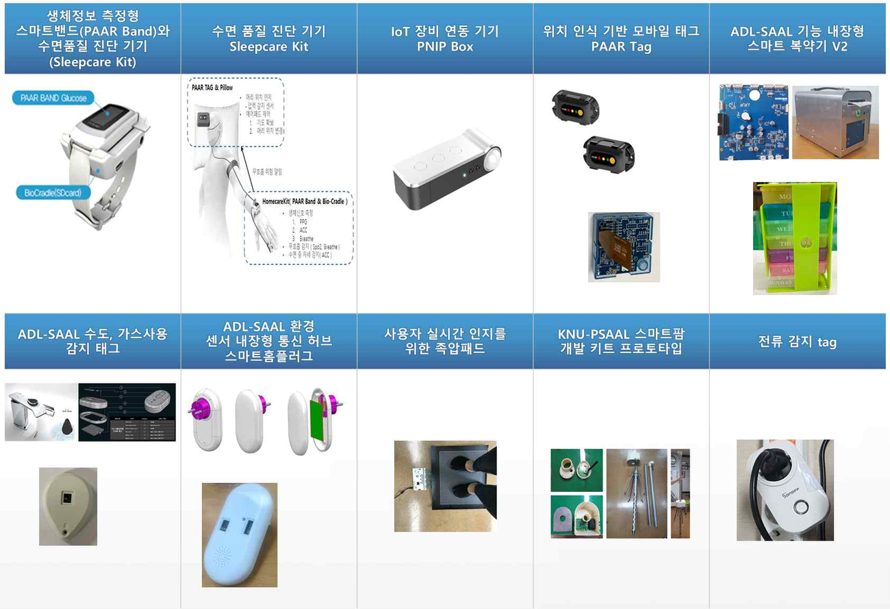
주요 실적 (2024-03 ~ 2025-02)
- 비침습식 ADL 실시간 감지용 위치기반형 단말 DE&N 하드웨어 및 소프트웨어 프로토타입 개발 완료 (UBINOS RTOS, Edge AI 소음 및 환경 데이터 인식 내장)
- SAAL 플랫폼 3.0 핵심 단말과 인프라: DE&N 노드 1.0, SlimHub 3.0 프로토타입, 원격 빅데이터 서버, 사용자 스마트폰 앱 초기 버전
- 군집지능 공통 플랫폼: Cortex-M7 계열 STM32H7 MCU 지원, TensorFlow Lite for Microcontrollers 기반 Edge AI 레퍼런스 라이브러리, Foot-pad 기반 경량 사용자 인식 모델 (플래시 33 %, RAM 80 % 절감, 처리 속도 10.9 배), 의도기반 스마트팜 플랫폼, 풀칩 시뮬레이션 환경, V2X 네트워크 슬라이싱
- 군집성 인지 미들웨어: ADL 리스트와 환경 데이터 레퍼런스 DB, DE&N 노드 3.0 (노이즈 사운드 온디바이스 분석), 우선순위 기반 sequence analysis, 3D CNN ADL 인식 (검증 정확도 약 96 %), 수면무호흡 분류 모델 (BiBiNet, MoL2), 갤럭시 워치 기반 수면무호흡 앱
- 생체-행동 인지 기능: 환자와 정상 그룹의 생체, 행동 데이터 수집과 패턴 분석, 병원 연계 데이터 인증, eCoaching 초기 프로토타입, 군집 서비스 상황인지 오류 분석 도구
주요 실적 (2025-03 ~ 2026-02)
- 군집지능 공통 플랫폼
- 신경망 가속 저전력 MCU 지원 확대: Raspberry Pi Pico (Pico SDK), ESP32-S3 (ESP-IDF) 개발 환경을 Ubinos 에 통합
- 임베디드 시스템용 AI 코딩 및 디버깅 자동화 프레임워크: 코드 생성, 빌드, 배포, 테스트, 분석, 수정의 폐루프를 실제 하드웨어에서 구동 (RST 문서로 컨텍스트 외부화, tmux 와 ubitool 로 디버거, 콘솔, 빌드 세션 유지)
- Ubinos 4.6: 상황 인지형 경량 하이퍼바이저와 PID 피드백 동적 스케줄링, LLVM 기반 Cache-TCM 최적 할당으로 메모리 접근 사이클과 전력 소모 저감
- 의도 기반 스마트팜과 eCoaching 을 위한 엣지 AI: 자가 지도 학습 가속 NPU 아키텍처, 스파이킹 신경망
- 이기종 엣지 디바이스 (bare-metal ~ 리눅스) HW/SW 통합 시뮬레이션 및 검증 환경
- SAAL 플랫폼 3.0 자율 이동체: 2D LiDAR 머신러닝 도킹 오차 4 mm 이내, 이벤트 기반 구조로 CPU 사용량 1/5 이하
- 사용자 기록 로그 기반 소프트웨어 오류 유형, 원인 분석과 탐지, 연합학습 및 강화학습 (TD3) 기반 자원 관리, NR-V2X 와 Wi-Fi Aware 위험 메시지 전송
- 군집성 인지 미들웨어
- 단위공간-거주공간-외부전문가 수직 연결 구조로 DE&N 노드 3.0 과 SlimHub 개선: PIR 출입 감지와 사운드 에너지 인터럽트 기반 수집, 배터리 관리 서비스, RF Front-End Module, Thingy:53 패킷 릴레이 노드, SlimHub CLI 관리
- ADL 분석 체계: 정규성, 운동능력, 행동 다양성 (I-ADL), 정확성 4 지표, DTW 기반 일상 루틴 정규성 변화, 대상자별 리포트와 관리 페이지
- 수면 무호흡: 갤럭시 워치 데이터 수집 파이프라인 (KCC 2025 논문, SW 등록 암니아가드), 이기종 생체 신호 시간 정합 프레임워크, 심전도 생성 모델 비교 (KCC 2025), Diffusion 기반 PPG-to-ECG 생성 (진행 중)
- 생체-행동 인지 기능
- DE&N 노드 3.0 이벤트 인지 강화: 환경 데이터 패턴 기반 이벤트, 노이즈 사운드 이벤트, 2차원 적외선 센서 출입 및 위치, 우선순위 힙 기반 Sequence Analysis, 웨어러블 가속도와 환경 데이터를 결합한 낙상 감지, 긴급 이벤트 실시간 알림
- 인지기능 저하를 겪는 분의 병증별 ADL 정의와 실시간 인지 기준 도출
- (사)스마트헬스표준포럼과 ADL 기반 노인생활능력 평가 표준안 개발 용역 (2025-06-20 ~ 2025-09-19), 5 개 분석 차원 (정규성, 다양성, 정확성, 운동능력, 이벤트 유형 분류), ISO/TC 215 회의 결과 (N5100) 검토
- 온디바이스 사운드 분석 모델: 전이학습, 위치 인지 라벨링, 준지도 학습으로 분류 정확도를 50 ~ 70 % 에서 90 % 이상으로 향상 (IEEE Access 게재)
계획 (2026-03 ~ 2027-02)
- 군집지능 공통 플랫폼: Ubinos 표준 API 가이드라인, MCP 기반 디버거 및 계측 장비 제어를 포함한 AI 코딩 및 디버깅 자동화 프레임워크, 디지털 트윈 기반 가상 레이어 피드백 시스템, 인공지능형 스마트팜 기본 플랫폼 완성, NR-V2X 자원 스케줄링과 사고 위험도 분석, 생성형 AI 기반 환경 에이전트 프레임워크, SAAL 플랫폼 3.0 개발 완료
- 군집성 인지 미들웨어: ESP32-S3 단일 MCU 기반 DE&N 노드 전환 (기존 nRF5340 + STM32H723 이중 MCU 대체), 군집성 인지 미들웨어 구조 재정의, 원격 업데이트 및 관리 구조, ADL 분석 리포트 확장과 단계별 알림 서비스
- 생체-행동 인지 기능: 노인 및 인지장애 환자 IoT 솔루션 임상적용 연구 (신뢰도, 타당도 평가), Embedded AI 기반 환경-행동-사운드 복합 이벤트 인지, 노동 현장 상황 인지 (사이렌, 고소 작업 낙상, 고온 다습 작업 환경), Diffusion 기반 PPG-to-ECG 생성 모델, 수면무호흡 합성 연구 마무리
테스트베드와 실증
- 치매안심마을과 협업한 거주 환경 실증 테스트베드, 지역병원 (칠곡경북대학교병원 노인보건의료센터) 과 환자 실거주 환경을 잇는 SAAL 서비스 단계적 확대
- 치매안심마을: 대구시 군위군, 제주시 애월읍 고성리
- 실거주 환경 테스트베드 (2025-03 ~ 2026-02)
- DE&N 노드-SlimHub-원격 DB 서버 실증 인프라: DE&N 노드 5 기와 릴레이 노드 2 기로 거주 환경 5:1 통신망을 확인했습니다.
- 5 개 가구에 SAAL 플랫폼을 설치해 운영했습니다.
- 정상 거주자 테스트베드: 독거노인 및 독거부부 가구에서 가구당 약 1 개월 데이터를 모아 유효성을 검증했습니다.
- 인지기능 저하를 겪는 분을 대상으로 한 테스트 환경을 구축했습니다.
- 임상
- 칠곡경북대학교병원과 공동 연구 체계를 구축하고, IRB 및 DRB 승인 절차를 거쳐 수면 무호흡 임상 데이터를 수집하고 있습니다 (2025-03 ~ 2026-02).
- DEAN 기반 ADL 수집 임상시험 사전 설명회를 열었습니다 (2025-11, 제주 아라일동 마을회관).
- 응용 실증: 의도기반 스마트팜 (2024-03 ~ 2025-02, 대구, 포항 실증 환경, 애플망고 미니 농장), 연안 해양 수질 감시 (제주대 SeaGrant 사업단 협업), 화분 이동형 자율군집 스마트팜 (포항 바론농협 회사 법인 협업)
- 협력: SAAL Alliance (지역 산업체 컨소시엄), 해외 UPENN PRECISE Lab, University of Eastern Finland, Chiba University 와 공동 연구 및 세미나
DEAN 노드 기반 ADL 실시간 수집 및 분석
- DEAN 노드 (Digital Ear and Nose node, DE&N 노드) 는 귀 (노이즈 마이크) 와 코 (공기질, 환경 센서) 로 단위공간의 생활을 듣고 맡아, 카메라나 웨어러블 없이 거주자의 일상생활 수행 (ADL, Activities of Daily Living) 을 실시간으로 인지합니다.
하드웨어와 센서
- 센서: 2차원 적외선 센서 (PIR Array), 노이즈 마이크, 온습도, 공기질 분석 센서 (Gas), 조도 센서 (Light)
- 인지 대상: 출입, 체류, 생활 행동 (ADL) 과 단위공간 이동 속도, 거리, 이동 횟수, 체류 시간. 결과는 SlimHub 에 알립니다.
- 통신: BLE 무선통신으로 데이터를 관리합니다.
- 처리: On-Device AI 로 노이즈 마이크 데이터를 분석합니다.
- 설치: 천장 (화재감지기와 비슷한 위치) 이나 벽면에 붙여 개별 단위공간 (거실, 화장실, 안방 등) 의 ADL 을 분석합니다. 한 집의 출입구, 침실, 화장실, 주방, 거실에 하나씩 두고, 가운데의 SlimHub 와 잇습니다.

- DEAN node 2026 판: On-device AI 지원 MCU, 저전력 구현, USB-C, 확장 배터리 (유선, 무선), 쉬운 설치를 특징으로 하는 deep edge node 로, 대규모 실증에 맞는 사양을 갖추었습니다.

소프트웨어 구조
- Sequence Analysis 를 위해 Device 이벤트, Environmental 이벤트, Sound 이벤트를 각각 독립적으로 분석합니다.
- Device manager: 환경 변화나 노이즈 사운드만으로는 확인할 수 없는 ADL 이벤트를 처리합니다.
- Environmental manager: ADL 마다 다른 환경 변화를 이벤트로 추출합니다 (Signal event extraction task).
- Sound event manager: 노이즈 사운드를 On-Device AI 로 분석해 분류합니다.
- 세 manager 의 이벤트는 Sequence Analysis Engine 으로 모이고, 결과는 무선 통신 프록시 (BLE) 를 거쳐 전송됩니다.

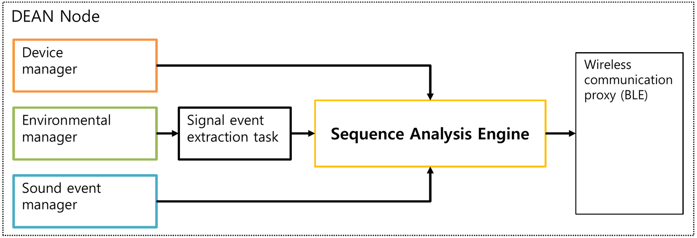
- 단위공간마다 그 공간에 특화된 학습 데이터를 내장합니다 (노이즈 사운드 10 ~ 15 개 클래스, 대기환경신호 5 개 클래스). 노이즈 사운드는 클래스마다 1000 개 이상의 일반 데이터로 학습한 뒤, 해당 가정의 특수성을 반영한 데이터 (domain dependent dataset) 를 10 % 이상 뽑아 전이학습해 정확도를 높입니다. 대기환경신호도 비슷한 비율로 학습합니다.
- 노이즈 사운드는 소리 유형별 확률 이벤트로, 대기환경신호는 5 개 클래스의 확률 이벤트로 분류합니다. 분류된 이벤트는 시계열 이벤트 스트림이 되고, 실시간 선후관계 분석 (event sequence analysis) 으로 어떤 ADL 에 해당하는지 추론합니다. 최종 결과만 SlimHub 로 보냅니다.
- DEAN node 는 14 가지 ADL (TV 시청, 냉난방, 청소, 전자레인지, 식사, 소변, 대변, 설거지, 머리 말리기, 목욕, 샤워, 양치, 식사 준비, 수면) 을 스스로 판단하므로 원시 데이터를 클라우드로 보낼 필요가 없습니다.

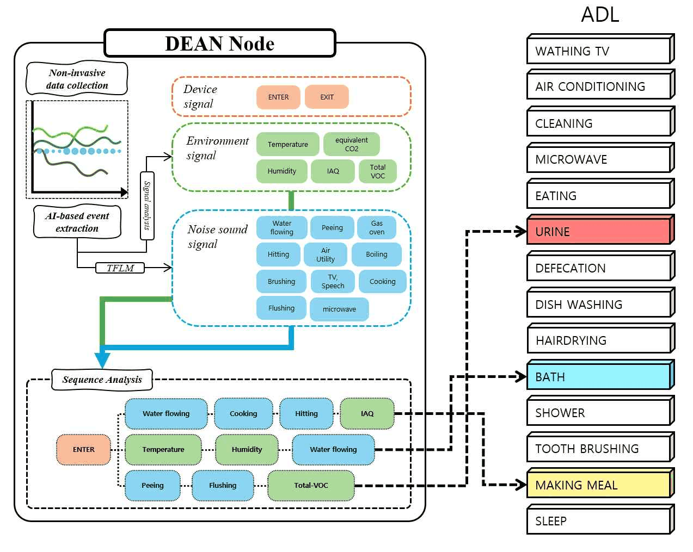
데이터 수집과 분석 방법
Environmental 이벤트
- 사람의 행동에 따라 변하는 주변 환경 (습도 상승, CO2 농도 변화 등) 을 감지합니다.
- 행동 시작부터 완료까지의 중간 데이터를 이벤트로 만들어 관리합니다. ADL 마다, 환경 데이터마다 신호 패턴이 다릅니다.
- 원시 값을 퍼지 값으로 바꾸고 (Fuzzifying), 상승 상태를 확인해 피크를 미리 검출하고 확정한 뒤 (Peak detection), 안정 구간에서 피크까지의 퍼지 차, 원시 값, 추출 소요 시간을 담은 환경 신호 이벤트를 추출합니다.

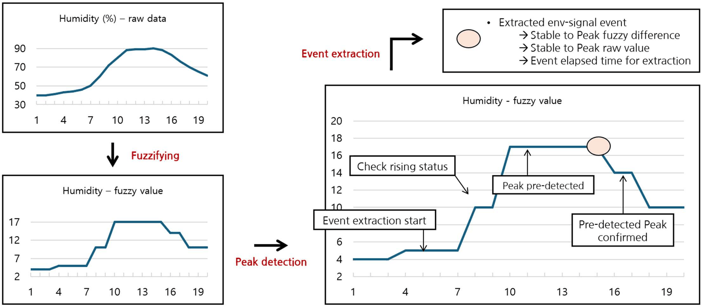
Sound 이벤트
- ADL 을 할 때 생기는 주변 노이즈 사운드를 On-Device 추론해 이벤트로 만듭니다.
- 단위공간마다 고유한 (domain-dependent) 소리가 나므로 Sound 이벤트 생성의 정확도가 올라갑니다.
- On-Device, Edge computing 으로 처리해 소리가 밖으로 새지 않습니다.
- 처리 흐름: PDM 마이크 -> Main MCU (버퍼링, Mel-spectrogram, 양자화) -> SPI -> Inference MCU (신경망 추론) -> SPI -> 후처리 (이벤트) -> 허브
- 11 개 소리 클래스 (배경, 두드림, 말소리와 TV, 공조 가전, 소변, 물내림, 물내림 끝, 약한 물소리, 강한 물소리, 비데, 전동칫솔) 의 혼동 행렬에서 클래스별 정답률은 90 % (말소리와 TV) ~ 100 % (비데) 입니다.

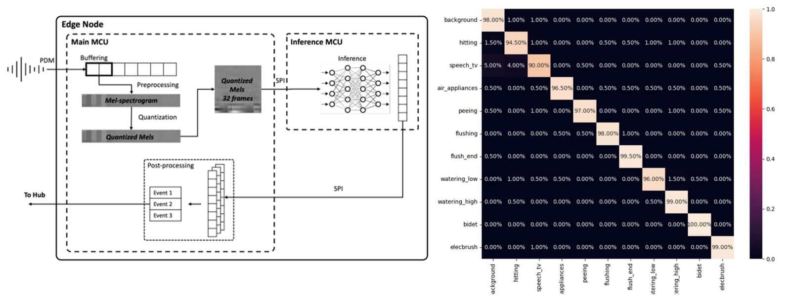
Device 이벤트
- 가전과 가구의 사용처럼 ADL 측정에 직접 영향을 주지만 환경 변화나 특정 소리로는 잡히지 않는 이벤트입니다. 기존 연구의 스마트 장비를 BLE 로 DEAN 노드에 연결해 하나의 Sequence 로 관리합니다.
- 외부 장치: Analog Motion Tag (개별 가구, 가전에 붙여 사용을 확인), Current Sensing Tag (가전의 전류 사용량으로 사용 여부와 사용 수준을 확인)
- DEAN 노드 안: 2D 적외선 배열 센서 (거주자의 단위공간 출입 감지), 조도 센서 (실내 조명 On/Off 확인)
- 생성 이벤트 예: ENTRY, LightOn, HairDryOn, refrigeratorClosed

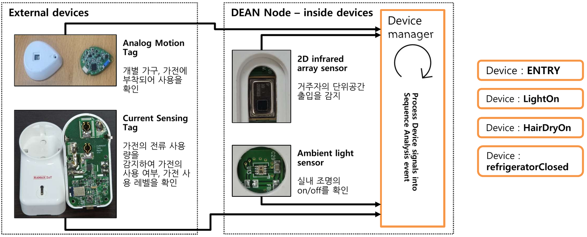
수집 파이프라인과 실시간 ADL 분석
- 주방, 화장실, 안방, 거실, 출입구에 DEAN 노드를 설치해 환경 신호, 노이즈 사운드 신호, Device 이벤트를 모읍니다.
- 원시 데이터는 중간 허브 (SlimHub) 로만 보내 외부 유출을 막습니다.
- ADL 이력과 ADL 수행 능력 평가를 위한 이벤트 시퀀스는 중간 허브와 App Server 를 잇는 데이터베이스로 보냅니다.
- 실시간 ADL 분석: 출입 -> 이벤트 생성 및 감지 -> 퇴장 사이의 데이터를 분석합니다. ADL 별 핵심 이벤트의 감지와 분석이 끝나면 ADL 을 추정해 App Server 와 데이터베이스로 보냅니다. ADL 시퀀스가 끝나지 않아도 거주자가 단위공간에서 나가면 추정 결과를 보냅니다.
- 단위공간마다 미리 정의한 ADL 시퀀스 (예: 화장실의 샤워 = 입장, 물 흐름 소리, 온도 상승, 습도 상승, 퇴장) 와 실시간으로 들어오는 이벤트의 순서를 맞추어 봅니다 (Match sequence order).

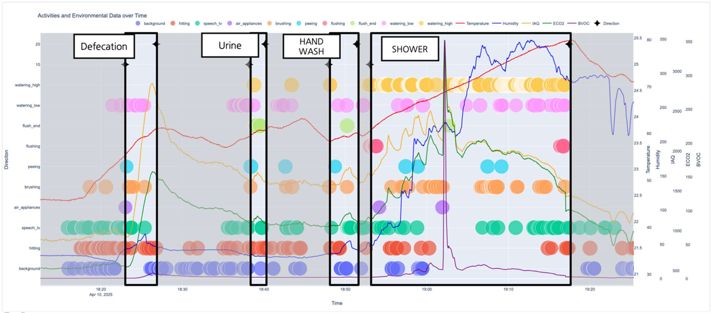

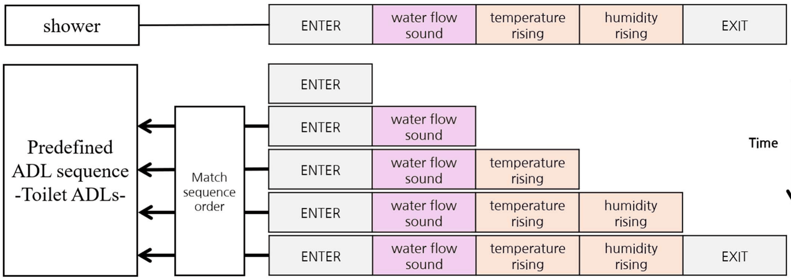
현장 설치와 분석 지표
- 실증 규모: 5 개 가구, 가구당 약 1 개월
- 모은 ADL 데이터는 정규성 (DTW 로 안정적 생활 루틴과 비교), 운동 능력 (집 안 이동 거리와 시간, 단위공간 체류), 행동 다양성 (I-ADL 도구 활용), 사회성 (대화 이벤트, 기획 중), 정확성 (미리 정의한 이벤트 시퀀스와 비교) 의 지표로 분석합니다.
- 관련 논문은 자율군집 관련 주요 연구 논문의 [11] (Sci. Rep. 2023), [12] (IEEE Access 2025), [13] (DEAN node, SmartNets 2025) 이고, 관련 등록 특허는 10-2866875 (2025-09-26) 입니다.